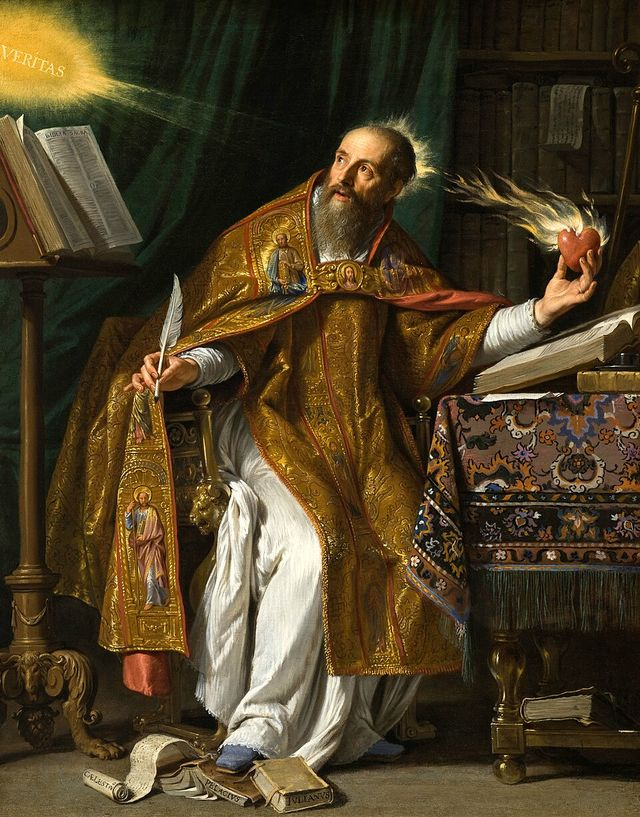
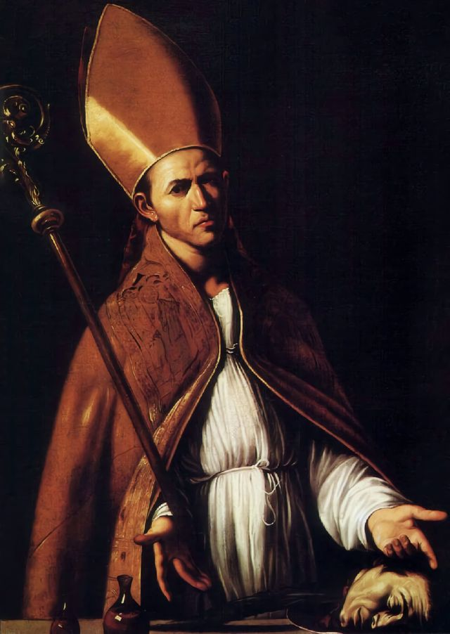
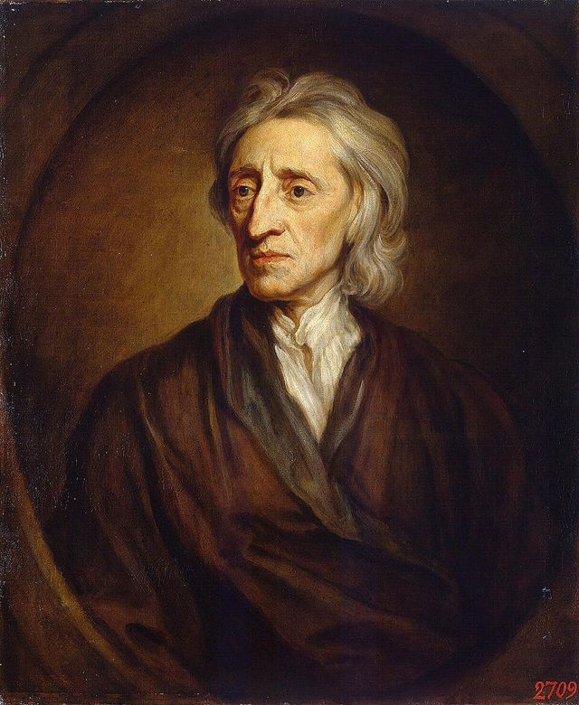
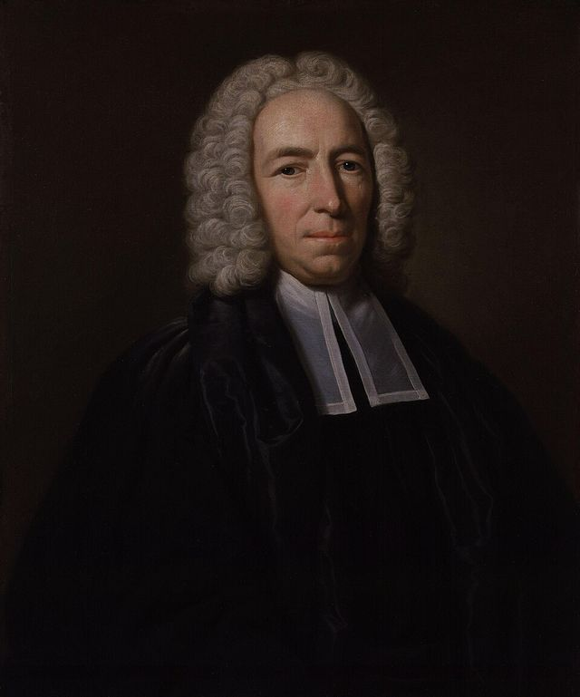
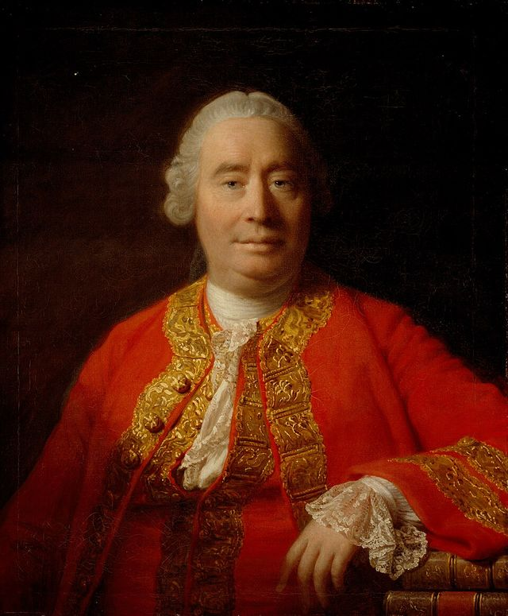
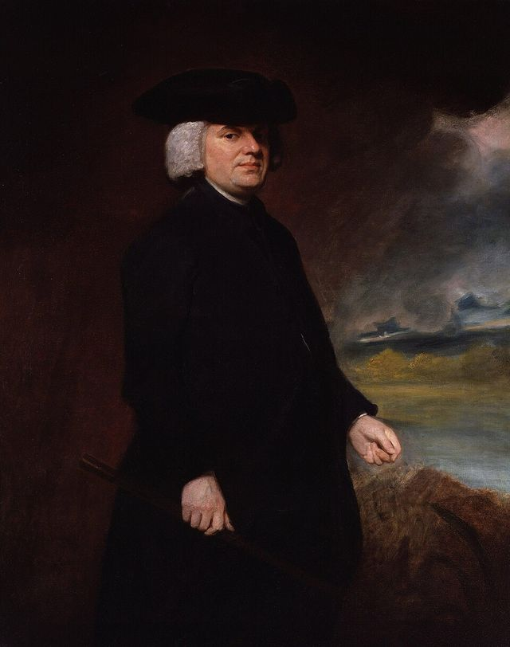

The same habits of mind which induced men at first to recoil from the belief in witchcraft with an instinctive and involuntary repugnance as intrinsically incredible, and afterwards openly to repudiate it, have operated in a very similar manner, and with very similar effects, upon the belief in modern miracles. The triumph, however, has not been in this case so complete, for the Church of Rome still maintains the continuance of miraculous powers; nor has the decay been so strictly normal, for the fact that most of the Roman Catholic miracles are associated with distinctively Roman Catholic doctrines has introduced much miscellaneous controversy into the question. But, notwithstanding these considerations, the general outlines of the movement are clearly visible, and they are well deserving of a brief notice.
Miracles as Ordinary Occurrences
Miracles related by the Fathers and Mediaeval Writers as ordinary and undoubted Occurrences.

If we would realise the modes of thought on this subject prior to the Reformation, we must quite dismiss from our minds the ordinary Protestant notion that miracles were very rare and exceptional phenomena, the primary object of which was always to accredit the teacher of some divine truth that could not otherwise be established. In the writings of the Fathers, and especially of those of the fourth and fifth centuries, we find them not only spoken of as existing in profusion, but as being directed to the most various ends. They were a kind of celestial charity, alleviating the sorrows, healing the diseases, and supplying the wants of the faithful. They were frequent incitements to piety, stimulating the devotions of the languid, and rewarding the patience of the fervent. They were the signs of great and saintly virtue, securing universal respect for those who had attained a high degree of sanctity, or assisting them in the performance of their more austere devotions. Thus, one saint having retired into the desert to lead a life of mortification, the birds daily brought him a supply of food, which was just sufficient for his wants; and when a kindred spirit visited him in his retirement, they doubled the supply; and when he died, two lions issued from the desert to dig his grave, uttered a long howl of mourning over his body, and knelt down to beg a blessing from the survivor.1 Thus, another saint, who was of opinion that a monk should never see himself naked, and who had therefore scrupulously abstained from washing since his conversion, stood one day in despair upon the banks of a bridgeless stream, when an angel descended to assist him, and transported him in safety across the dreaded element.2 Besides this, the power of magic was, as we have seen, fully recognised, both by Christians and Pagans, and each admitted the reality of the miracles of the other, though ascribing them to the agency of demons.3
If we pass from the Fathers into the middle ages, we find ourselves in an atmosphere that was dense and charged with the supernatural. The demand for miracles was almost boundless, and the supply was equal to the demand. Men of extraordinary sanctity seemed naturally and habitually to obtain the power of performing them, and their lives are crowded with their achievements, which were attested by the highest sanction of the Church. Nothing could be more common than for a holy man to be lifted up from the floor in the midst of his devotions, or to be visited by the Virgin or by an angel. There was scarcely a town that could not show some relic that had cured the sick, or some image that had opened and shut its eyes, or bowed its head to an earnest worshipper. It was somewhat more extraordinary, but not in the least incredible, that the fish should have thronged to the shore to hear St. Anthony preach, or that it should be necessary to cut the hair of the crucifix at Burgos once a month, or that the Virgin of the Pillar, at Saragossa, should, at the prayer of one of her worshippers, have restored a leg that had been amputated.4 Men who were afflicted with apparently hopeless disease, started in a moment into perfect health when brought into contact with a relic of Christ or of the Virgin. The virtue of such relics radiated in blessings all around them. Glorious visions heralded their discovery, and angels have transported them through the air. If a missionary went abroad among the heathen, supernatural signs confounded his opponents, and made the powers of darkness fly before his steps. If a Christian prince unsheathed his sword in an ecclesiastical cause, apostles had been known to combat with his army, and avenging miracles to scatter his enemies. If an unjust suspicion attached to an innocent man, he had immediately recourse to an ordeal which cleared his character and condemned his accusers. All this was going on habitually in every part of Europe without exciting the smallest astonishment or scepticism. Those who know how thoroughly the supernatural element pervades the old lives of the saints, may form some notion of the multitude of miracles that were related and generally believed from the fact that M. Guizot has estimated the number of these lives, accumulated in the Bollandist Collection, at about 25,000.5 Yet this was but one department of miracles. It does not include the thousands of miraculous images and pictures that were operating throughout Christendom, and the countless apparitions and miscellaneous prodigies that were taking place in every country, and on all occasions. Whenever a saint was canonised, it was necessary to prove that he had worked miracles; but except on those occasions miraculous accounts seem never to have been questioned. The most educated, as well as the most ignorant, habitually resorted to the supernatural as the simplest explanation of every difficulty.
The Growth of Scepticism
Rapid Growth of Scepticism on the Subject since the Reformation — The Sceptical Habit of Mind acts more powerfully on Contemporary than on Historical Narrations.
All this has now passed away. It has passed away not only in lands where Protestantism is triumphant, but also in those where the Roman Catholic faith is still acknowledged, and where the mediaeval saints are still venerated. St. Januarius, it is true, continues to liquefy at Naples, and the pastorals of French bishops occasionally relate apparitions of the Virgin among very ignorant and superstitious peasants; but the implicit, undiscriminating acquiescence with which such narratives were once received, has long since been replaced by a derisive incredulity. Those who know the tone that is habitually adopted on these subjects by the educated in Roman Catholic countries will admit that, so far from being a subject for triumphant exultation, the very few modern miracles which are related are everywhere regarded as a scandal, a stumbling-block, and a difficulty. Most educated persons speak of them with undisguised scorn and incredulity; some attempt to evade or explain them away by a natural hypothesis; a very few faintly and apologetically defend them. Nor can it be said that what is manifested is merely a desire for a more minute and accurate examination of the evidence by which they are supported. On the contrary, it will, I think, be admitted that these alleged miracles are commonly rejected with an assurance that is as peremptory and unreasoning as that with which they would have been once received. Nothing can be more rare than a serious examination, by those who disbelieve them, of the testimony on which they rest. They are repudiated, not because they are unsupported, but because they are miraculous. Men are prepared to admit almost any conceivable concurrence of natural improbabilities rather than resort to the hypothesis of supernatural interference, and this spirit is exhibited not merely by open sceptics, but by men who are sincere though, perhaps, not very fervent believers in their Church. It is the prevailing characteristic of that vast body of educated persons, whose lives are chiefly spent in secular pursuits, and who, while they receive with unenquiring faith the great doctrines of Catholicism, and duly perform its leading duties, derive their mental tone and colouring from the general spirit of their age. If you speak to them on the subject, they will reply with a shrug and with a smile; they will tell you that it is indeed melancholy that such narratives should be narrated in the middle of the nineteenth century; they will treat them as palpable anachronisms, as obviously and intrinsically incredible; but they will add that it is not necessary for all Roman Catholics to believe them, and that it is unfair to judge the enlightened members of the Church by the measure of the superstitions of the ignorant.

That this is the general tone adopted by the great majority of educated Roman Catholics, both in their writings and in their conversation, will scarcely be a matter of dispute. It is also very manifest that it is the direct product and measure of civilisation. The districts where an account of a modern miracle is received with least derision, are precisely those which are most torpid and most isolated. The classes whose habits of thought are least shocked by such an account, are those which are least educated and least influenced by the broad current of civilisation. If we put aside the clergy and those who are most immediately under their influence, we find that this habit of mind is the invariable concomitant of education, and is the especial characteristic of those persons whose intellectual sympathies are most extended, and who therefore represent most faithfully the various intellectual influences of their time. If you connect a nation which has long been insulated and superstitious with the general movement of European civilisation by means of railways, or a free press, or the removal of protecting laws, you will most infallibly inoculate it with this spirit.
It is further evident that this habit of thought is not a merely ephemeral movement, produced by some exceptional event, or by some transient literary fashion peculiar to our own century. All history shows that, in exact proportion as nations advance in civilisation, the accounts of miracles taking place among them become rarer and rarer, until at last they entirely cease.6 In this fact we have a clear indication of the decline of the old habits of thought; for those who regard these miracles as real, ascribe their disappearance to the progress of incredulity, while those who disbelieve them maintain that they were the results of a particular direction given to the imagination, and of a particular form of imposition created and suggested by the medieval habits of thought. In other words, the old spirit, according to one class, is the condition, and, according to the other class, the cause of the miracles; and, therefore, the cessation of miraculous narratives, when unaccompanied by an avowed change of creed, implies the decay of that spirit.
If these propositions be true—and I scarcely think that any candid person who seriously examines the subject can question them—they lead irresistibly to a very important general conclusion. They show that the repugnance of men to believe miraculous narratives is in direct proportion to the progress of civilisation and the diffusion of knowledge. It is not simply that science explains some things which were formerly deemed supernatural, such as comets or eclipses. We find the same incredulity manifested in Roman Catholic countries towards alleged miracles by saints, or relics, or images, on which science can throw no direct light, and which contain no element of improbability, except that they are miraculous. It is not simply that civilisation strengthens Protestantism at the expense of the Church of Rome. We find this spirit displayed by Roman Catholics themselves, though the uniform tendency of their theology is to destroy all notion of the antecedent improbability of modern miracles; and though the fact that these miracles are only alleged in their own church should invest them with a peculiar attraction. It is not even that there is an increasing repugnance to an unscrutinising and blindfold faith. Alleged miracles are rejected with immediate unreasoning incredulity by the members of a church which has done everything in its power to prepare the mind for their reception. The plain fact is, that the progress of civilisation produces invariably a certain tone and habit of thought, which makes men recoil from miraculous narratives with an instinctive and immediate repugnance, as though they were essentially incredible, independently of any definite arguments, and in spite of dogmatic teaching. Whether this habit of mind is good or evil, I do not now discuss; that it exists wherever civilisation advances, is, I conceive, incontestable.
We may observe, however, that it acts with much greater force against contemporary than against historical miracles. Roman Catholics who will reject with immediate ridicule an account of a miracle taking place in their own day, will speak with considerable respect of a precisely similar miracle that is attributed to a mediaeval saint. Nor is it all difficult to discover the reason of this distinction. Events that took place in a distant past are not realised with the same intense vividness as those which take place among ourselves. They do not press upon us with the same keen reality, and are not judged by the same measure. They come down to us invested with a legendary garb, obscured by the haze of years, and surrounded by circumstances that are so unlike our own that they refract the imagination, and cloud and distort its pictures. Besides this, many of these narratives are entwined with the earliest associations of the Roman Catholic child; the belief in them is infused into his yet undeveloped mind, and they are thus at no period brought in contact with a matured and unbiassed judgment. We find, therefore, that although these general habits of thought do, undoubtedly, exercise a retrospective influence, that is not their first or their most powerful effect.
The Early Protestants
Among the early Protestants, the Cessation of Miracles supposed to have taken place when the Fathers passed away — Persecution regarded by some English Divines as a Substitute for Miracles — Opinions of Locke and Newton on the Subject.
In Protestant countries there has not been as complete a change as that which we have been considering, for Protestantism was only called into existence when the old habits of thought had greatly declined. The Reformation was created and pervaded by the modern spirit; and its leaders were compelled, by the exigencies of their position, to repudiate the miraculous accounts of their time. They could not with any consistency admit that the Almighty had selected as the peculiar channels of His grace, and had glorified by countless miracles, devotions which they stigmatised as blasphemous, idolatrous, and superstitious. We find, accordingly, that from the very beginning, Protestantism looked upon modern miracles (except those which were comprised under the head of witchcraft) with an aversion and distrust that contrast remarkably with the unhesitating credulity of its opponents. The history of its sects exhibits, indeed, some alleged miracles, which were, apparently, the result of ignorance or enthusiasm, and a very few which were obvious impositions. Such, for example, was the famous voice from the wall in the reign of Queen Mary, which proclaimed the mass to be idolatrous, just as the crucifix in Christ Church, at Dublin, shed tears of blood in the following reign, because the Protestant service was introduced into Ireland. On the whole, however, the new faith proved remarkably free from these forms of deception; and its leaders generally concurred in the belief, that miracles had ceased when Christianity had gained a definite ascendency in the world. The Patristic writings are full of miraculous accounts; and most of the reformers, and especially those in England, treated Patristic authority with great respect; so that the line of demarcation between the miraculous and the non-miraculous age, was generally drawn at about the period when the most eminent of the Fathers passed away. As this was not very long after Christianity had obtained a complete command of the civil power, many plausible arguments could be urged in support of the view, which appears, in England at least, to have been universal.

When Locke was writing his famous Letters on Toleration, he was led to a consideration of the Patristic miracles by an argument which seems then to have been deemed very forcible, but which, as it belongs to a different ‘climate of opinion’ from our own, would now be regarded as both futile and irreverent. It was absolutely necessary, it was contended, under ordinary circumstances, for the well-being of Christianity, that it should be supported by persecution; that is to say, that the civil power should suppress its opponents. When Christianity was still unrecognised by government, it existed in an abnormal condition; the laws of nature were suspended in its favour, and continual miracles ensured its triumph. When, however, the conversion of Constantine placed the civil power at its disposal, the era of the supernatural was closed. The power of persecuting was obtained; and, therefore, the power of working miracles was withdrawn. The alliance between Church and State being instituted, Christianity had arrived at its normal and final position, and exceptional assistance had become unnecessary.7 This argument, the work of the theologians of Oxford, was not likely to stagger Locke; but the historical question which it opened was well calculated to arrest that keen and fearless intellect, so little accustomed to bow before unsupported authority, and at that very time engaged in the defence of toleration against the entire weight of ecclesiastical tradition. He appears to have consulted Sir Isaac Newton; for, in one of Newton’s letters, we find a somewhat hesitating passage upon the subject: ‘Miracles,’ Newton wrote, ‘of good credit continued in the Church for about two or three hundred years. Gregorius Thaumaturgus had his name from thence, and was one of the latest who was eminent for that gift; but of their number and frequency I am not able to give you a just account. The history of those ages is very imperfect.’8 Locke does not appear to have adopted this view. In reply to the Oxford argument, he wrote a very remarkable passage, which did not, apparently, attract at the time the attention it deserved, but which, long afterwards, obtained an extremely conspicuous place in the discussion. ‘This, I think,’ he said, ‘is evident, that he who will build his faith or reasonings upon miracles delivered by Church historians, will find cause to go no further than the Apostles’ time, or else not to stop at Constantine’s, since the writers after that period, whose word we readily take as unquestionable in other things, speak of miracles in their time, with no less assurance than the Fathers before the fourth century; and a great part of the miracles of the second and third centuries stand upon the credit of the writers of the fourth.’9
Middleton’s Free Inquiry
Tendencies of the Eighteenth Century adverse to the Miraculous — Middleton — Discussion of his Principles by Church, Dodwell, Gibbon, Hume, Farmer, Warburton, and Douglas — General Abandonment of the Patristic Miracles.
After this time, the subject of the miracles of the Fathers seems to have slept until public attention was called to it by the well-known work of Middleton. That the ‘Free Inquiry’ was a book of extraordinary merit—that it displayed great eloquence, great boldness, and great controversial dexterity, and met with no opposition at all equal to its abilities, will scarcely be denied. But, in order to appreciate its success, we should consider, besides these things, the general character of the age in which it appeared. During the half century that elapsed between Locke and Middleton, many influences that it would be tedious to examine, but to which Locke himself by his philosophy most largely contributed, had profoundly modified the theology of England. The charm and fascination which the early Fathers exercised upon the divines of the previous century had quite passed away. The Patristic works fell rapidly into neglect, and the very few who continued to study them were but little imbued with their spirit. Nothing, indeed, could be more unlike the tone of the Fathers than the cold, passionless, and prudential theology of the eighteenth century, a theology which regarded Christianity as an admirable auxiliary to the police force, and a principle of decorum and of cohesion in society, but which carefully banished from it all enthusiasm, veiled or attenuated all its mysteries, and virtually reduced it to an authoritative system of moral philosophy. There never had been a time when divines had such a keen dread of anything that appeared absurd or grotesque. The spirit that, in the previous century, had destroyed the belief in witchcraft, passed in its full intensity into their works. Common sense was the dominating characteristic of all they wrote. Generous sentiments, disinterested virtue, reverential faith, sublime speculations, had passed away. Every preacher was employed in showing that Christianity was in all respects perfectly in accordance with human reason, in eliminating or obscuring whatever could shock the feelings or offend the judgment, in representing religion as intended to refine and harmonise society, to embellish all the relations of life, to give a higher sanction to the dictates of human prudence, and to extend the horizon of that prudence beyond the grave. As a consequence of this state of mind, there was an increasing indisposition to accept miracles like those of the Fathers, which were not included in the evidences of Christianity, and a decreasing reverence for the writers on whose testimony they rest.

It was in the midst of this movement of thought, that Middleton published his great attack upon the Patristic miracles, and brought into clear relief both the difficulties and the importance of the subject. The writings of the Fathers contain numerous accounts of miracles which they alleged to have taken place in their own day and under their own notice, and which are of such a nature, and are related in such a manner, that it seems scarcely possible to avoid the conclusion that they had really taken place, or else that the Fathers deliberately palmed them off upon the credulity of their readers. The works of the first century that have come down to us are extremely scanty, and consist almost entirely of short epistles written without any historical or controversial purpose, for the encouragement or edification of believers; but, even in this century, the martyrdom of St. Polycarp supplies an account which is clearly miraculous. Justin Martyr, who wrote very early in the second century, and it is said not more than fifty years after the death of St. John, distinctly asserts the continuance of miracles in his time, and from this date the evidence is ample and unbroken. The Protestant theory is, that miracles became gradually fewer and fewer, till they at last entirely disappeared. The historical fact is, that generation after generation, the miraculous accounts became more numerous, more universal, and more extraordinary. ‘As far as the Church historians can illustrate or throw light upon anything, there is not a single point in all history so constantly, explicitly, and unanimously affirmed by them all, as the continual succession of those powers through all ages, from the earliest Father who first mentions them down to the time of the Reformation.’10 If, then, we gave even a general credence to the historical evidence upon the subject, we should be carried down, without pause or chasm, into the depths of the middle ages; and we should be compelled to admit that what Protestants regard as the worst superstitions of the Church of Rome, were for centuries the habitual and special channels of supernatural favour. If again, in defiance of all the ordinary rules of historical criticism, we believed the assertions of the writers of the fourth century, but refused to credit the equally positive testimony of the writers of the ninth century, we should still be met by the same difficulty, though in a modified form. It may be contended, that the Fathers of the fourth century were not Roman Catholics; but it is quite certain that they were not, in the ordinary sense of the word, Protestants. It is quite certain that there existed among them many practices, forms of devotion, and doctrinal tendencies, which may not have been actually Roman Catholic, but which, at least, hung upon the extreme verge of Catholicism which inevitably gravitated to it, and which were the germs and the embryos of mediaeval theology. Now, it is precisely in connection with this department of their theology that the miraculous accounts are most numerous.
Such was the great difficulty of the question, regarded from the Protestant point of view. Middleton met it by an attack upon the veracity of the Fathers, which was so eloquent, so uncompromising, and so admirably directed, that all England soon rang with the controversy. He contended that the religious leaders of the fourth century had admitted, eulogised, and habitually acted upon principles that were diametrically opposed not simply to the aspirations of a transcendent sanctity, but to the dictates of the most common honesty. He showed that they had applauded falsehood, that they had practised the most wholesale forgery, that they had habitually and grossly falsified history, that they had adopted to the fullest extent the system of pious frauds, and that they continually employed them to stimulate the devotion of the people. These were the charges which he brought against men, around whose brows the saintly aureole had sparkled for centuries with an unfading splendour; against those great Fathers who had formed the theological systems of Europe; who had been the arbitrators of so many controversies, and the objects of the homage of so many creeds. The evidence he adduced was pointed directly at the writers of the fourth century; but he carried his argument back to a still earlier period. ‘When we reflect,’ he says, ‘on that surprising confidence and security with which the principal Fathers of this fourth century have affirmed as true what they themselves had either forged, or what they knew at least to be forged, it is natural to suspect that so bold a defiance of sacred truth could not be acquired or become general at once, but must have been carried gradually to that height by custom and the example of former times, and a long experience of what the credulity and superstition of the multitude would bear.’11

It is manifest that an attack of this kind opened out questions of the gravest and widest character. It shook the estimate of the Fathers which had been general, not only in the Church of Rome, but in a great degree among the ablest of the Reformers. In the Church of England especially, the Patristic authority had been virtually regarded as almost equal in authority to that of the inspired writers. The first great theological work of the English Reformation was ‘The Apology,’ in which Jewel justified the Reformers, by pointing out the deviations of the Church of Rome from the Patristic sentiments. It had ever been the pride of the great divines of the seventeenth century that they were the most profound students of the Patristic writings, the most faithful representatives of their spirit, and the most loyal respecters of their authority. The unsupported assertion of a Father had always been regarded as a most weighty, if not a decisive, argument in controversy. But surely this tone was idle and worse than idle, if the estimate of Middleton was correct. If the Fathers were in truth men of the most unbounded credulity and of the laxest veracity; if the sense of the importance of dogmas had, in their minds, completely superseded the sense of rectitude, it was absurd to invest them with this extraordinary veneration. They might still be reverenced as men of undoubted sincerity, and of the noblest heroism. They might still be cited as witnesses to the belief of their time, and as representing the tendencies of its intellect; but their pre-eminent authority had passed away. The landmarks of English theology were removed. The traditions on which it rested were disturbed. It had entered into new conditions, and must be defended by new arguments. But beyond all this, there were other and, perhaps, graver questions suggested. Under what circumstances was it permitted to reject the unanimous and explicit testimony of all ecclesiastical historians? What was the measure of their credulity and of their veracity? What again was the degree of the antecedent improbability of miracles, the criteria separating the true from the false, and the amount of testimony required to substantiate them?
These were the great questions which were evoked in 1748, by this Doctor of Divinity, and they were sufficient for many years to attract the attention of the ablest enquirers in England. Among the laity, the work of Middleton seems to have met with great acceptance. Among the clergy, its impetuous, uncompromising, and sceptical tone, naturally excited much alarm, and the University of Oxford signalised itself in the opposition; but it is a remarkable sign of the times that the Fathers found no abler defenders than Church and Dodwell. Gibbon, who was then a very young man, and already entangled in the arguments of Bossuet, lost his remaining faith in Protestantism during the discussion. He could not, he said, bring himself at that time to adopt the conclusions of Middleton, and he could not resist the evidence that miracles of good credit had continued in the Church after the leading doctrines of Catholicism had been introduced. He accordingly embraced those doctrines, and left the University without taking his degree. Hume investigated the subject from a philosophical point of view; he endeavoured to frame a general doctrine, determining the relation between miraculous narratives and historical testimony, the comparative improbability of the reality of miracles and of the unveracity of historians; and the result was his Essay on Miracles.12 Farmer, reproducing an old notion of Lightfoot, Webster, and Semler, and anticipating in this respect the current of German rationalism, attempted to explain the diabolical possessions of Scripture by the ordinary phenomena of epilepsy.13 Warburton and Douglas, with probably most of the ablest of the clergy, abandoning the Patristic miracles, proceeded to establish the peculiar character and evidence of the miracles recorded by the Evangelists; and the general adoption of this tone may be said to have ushered in a new phase in the history of miracles.
Tractarianism
Rise of Tractarianism — Small place Catholic Miracles occupied in the Discussion it evoked — Weakness of the common Arguments against the continuance of Miracles.
It has been often remarked as a singular fact, that almost every great step which has been made by the English intellect, in connection with theology, has been made in spite of the earnest and persistent opposition of the University of Oxford. The attitude which that University preserved during the Middletonian controversy was precisely the same as that which it had exhibited towards the two great questions of the previous century. The advocates of the theory of civil liberty, in opposition to the theory of passive obedience, and the advocates of toleration as opposed to persecution, had found at Oxford their most unflinching and their most able adversaries. In our own century, when the secularisation of politics was forced upon the public mind by the discussions on the Test Act and on Catholic Emancipation, and when it had become evident to all attentive observers that this question was destined to be the battle-field of the contest between modern civilisation and tradition, the University of Oxford showed clearly that its old spirit had lost none of its intensity, though it had lost much of its influence. Still later, in 1833, a great reactionary movement emanated from the same quarter, and was directed avowedly against the habits of religious thought which modern civilisation had everywhere produced. Its supporters denounced these habits as essentially and fundamentally false. They described the history of English theology for a century and a half as a history of uninterrupted decadence. They believed, in the emphatic words of their great leader, that ‘the nation was on its way to give up revealed truth.’14 After a time, the movement tended to Catholicism with a force and rapidity that it was impossible to mistake. It produced a defection which was quite unparalleled in magnitude since that which had taken place under the Stuarts; and which, unlike the former movement, was altogether uninfluenced by sordid considerations. The point which I desire to notice in connection with this defection, as illustrating the tendency I am tracing in the present chapter, is the extremely small place which the subject of Roman Catholic miracles occupied in the controversy.
If we ask, what are the grounds on which the cessation of miracles is commonly maintained, they may, I suppose, be summed up much as follows:—Miracles, it is said, are the Divine credentials of an inspired messenger announcing doctrines which could not otherwise be established. They prove that he is neither an impostor nor an enthusiast; that his teaching is neither the work of a designing intellect nor of an over-heated imagination. From the nature of the case, this could not be proved in any other way. If the Almighty designed to reveal to mankind a system of religion distinct from that which is reflected in the works of nature, and written on the consciences of men, He must do so by the instrumentality of an inspired messenger. If a teacher claims to be the special organ of a Divine communication revealing supernatural truths, he may be justly expected to authenticate his mission in the only way in which it can be authenticated—by the performance of supernatural acts. Miracles are, therefore, no more improbable than a revelation; for a revelation would be ineffectual without miracles. But, while this consideration destroys the common objections to the Gospel miracles, it separates them clearly from those of the Church of Rome. The former were avowedly exceptional; they were absolutely necessary; they were designed to introduce a new religion, and to establish a supernatural message. The latter were simply means of edification; they were directed to no object that could not otherwise be attained; and they were represented as taking place in a dispensation that was intended to be not of sight but of faith. Besides this, miracles should be regarded as the most awful and impressive manifestations of Divine power. To make them habitual and commonplace would be to degrade if not to destroy their character, which would be still further abased if we admitted those which appeared trivial and puerile. The miracles of the New Testament were always characterised by dignity and solemnity; they always conveyed some spiritual lesson, and conferred some actual benefit, besides attesting the character of the worker. The medieval miracles, on the contrary, were frequently trivial, purposeless, and unimpressive; constantly verging on the grotesque, and not unfrequently passing the border.
Such is, I think, a fair epitome of the common arguments in favour of the cessation of miracles; and they are undoubtedly very plausible and very cogent; but, after all, what do they prove? Not that miracles have ceased; but that, supposing them to have ceased, there is nothing surprising or alarming in the fact. A man who has convinced himself of the falseness of the ecclesiastical miracles, may very fairly adduce these considerations to prove that his conclusion does not impugn the Biblical narratives, or introduce confusion or incoherence into the system of Providence; but this is the full extent to which they can be legitimately carried. As an a priori proof, they are far too weak to withstand the smallest amount of positive testimony. Miracles, it is said, are intended exclusively to accredit an inspired messenger. But, after all, what proof is there of this? It is simply an hypothesis—plausible and consistent it may be, but entirely unsupported by positive testimony. Indeed, we may go further, and say that it is distinctly opposed to your own facts. You may repudiate the unanimous belief of the early Christians, that miracles were ordinary and commonplace events among all nations. You may resist the strong arguments that may be drawn from the unsurprised reception of the Christian miracles, and from the existence of the demoniacs and of the exorcists, but at least you must admit that the Old Testament relates many miracles which will not fall under your canon. The creation was a miracle, and so was the deluge, and so was the destruction of the cities of the plain. The Old Testament miracles are, in many respects, unlike those of the New Testament: is it impossible that there should be another class different from either? But the ecclesiastical miracles, it is said, are often grotesque; they appear prima facie absurd, and excite an irresistible repugnance. A sufficiently dangerous test in an age in which men find it more and more difficult to believe any miracles whatever! A sufficiently dangerous test for those who know the tone that has been long adopted, over an immense part of Europe, towards such narratives as the deluge, or the exploits of Samson, the speaking ass, or the possessed pigs! Besides this, a great proportion of the ecclesiastical miracles are simply reproductions of those which are recorded in the Bible; and if there are mingled with them some that appear manifest impostures, this may be a very good reason for treating these narratives with a more jealous scrutiny, but is certainly no reason for maintaining that they are all below contempt. The Bible neither asserts nor implies the revocation of supernatural gifts; and if the general promise that these gifts should be conferred may have been intended to apply only to the Apostles, it is at least as susceptible of a different interpretation. If these miracles were actually continued, it is surely not difficult to discover the beneficial purpose that they would fulfil. They would stimulate a languid piety; they would prove invaluable auxiliaries to missionaries labouring among barbarous and unreasoning savages, who, from their circumstances and habits of mind, are utterly incapable of forming any just estimate of the evidences of the religion they are expected to embrace. Even in Europe the results of the controversies of the last 300 years have not been so entirely satisfactory as to leave no room for some more decisive proofs than the ambiguous utterances of a remote antiquity. To say that these miracles are false because they are Roman Catholic is to assume the very question at issue. The controversy between Protestantism and Catholicism comprises an immense mass of complicated and heterogeneous arguments. Thousands of minds have traversed these arguments, and have found at each step their faith in Protestantism confirmed. Thousands of minds have pursued the same course with results that were diametrically opposite. The question is, whether an examination of the alleged miracles of Catholicism would not furnish a decisive criterion, or at least one of the most powerful arguments, for determining the controversy. What evidence of the truth of Catholicism could be stronger than that its distinctive doctrines had been crowned by tens of thousands of miracles, that a supernatural halo had encircled it wherever it appeared, and had cast a glory upon all its triumphs?15 What proof of the falsehood of Catholicism could be more decisive than that it was unable to establish any of the immense mass of miracles which it had asserted, that all these were resolved and dissipated before a searching criticism, that saints had been canonised, forms of worship established, countless bulls and pastorals issued, innumerable rejoicings, pageantries, processions, and pilgrimages authoritatively instituted, public opinion all through Christendom violently and continuously agitated on account of alleged events which had either no existence, or which were altogether misunderstood? Making every allowance for the errors of the most extreme fallibility, the history of Catholicism would on this hypothesis represent an amount of imposture probably unequalled in the annals of the human race. If, again, you say that you have formed a definite and unhesitating opinion on the subject from other arguments, I reply that, putting aside all other considerations this answer might suggest, it does not apply to the Tractarian movement we are considering. The transition from the Church of England to the Church of Rome, which was made by so many in consequence of that movement, was not abrupt or unwavering. It was, on the contrary, slow, painful, hesitating, and dubious. Some of those who made it have described themselves as trembling for months, and even years, between the opposing creeds, their minds vibrating and oscillating to and fro: countless difficulties, colliding principles, modes of reasoning the most various, blending and neutralising sentiments of every hue, torturing their minds with doubt, and sometimes almost destroying by their conflict the very faculty of judgment. Surely one might have imagined that men in such a position would have gladly exchanged those shifting speculations that so constantly elude the grasp and bewilder the mind, and catch their colour from each changing mode of thought, for the comparatively firm and definite ground of historical criticism! The men were admirably fitted for such criticism. They were pre-eminently scholars and antiquarians, and in its intellectual aspect the movement was essentially a resuscitation of the past. Nor did the age seem at first sight less suited for the enterprise. At the time of the Reformers the study of evidences, and indeed all searching investigation into the facts of the past, were unknown. When, however, Tractarianism arose, the laws of historical criticism were developed to great perfection, and they were attracting an immense proportion of the talent of Europe. In English theology, especially, they had become supreme. The attacks which Woolston and his followers had made upon the scriptural miracles had been repelled by Lardner and Paley with such unexpected vigour, with such undoubted ability, and, as it was long thought, with such unanswerable success, that all theological reasoning had been directed to this channel. Yet in the Tractarian movement the subject of modern miracles can scarcely be said to have exercised a perceptible influence. Gibbon, as we have seen, had gone over to Rome chiefly through a persuasion of their reality. Chillingworth still earlier had declared that the same reason had been one of those which had induced him to take the same step. Pascal had based his defence of Jansenism in a great measure upon the miracle of the Holy Thorn; but at Oxford these narratives hardly excited a serious attention. What little influence they had was chiefly an influence of repulsion; what little was written in their favour was written for the most part in the tone of an apology, as if to attenuate a difficulty rather than to establish a creed.16
This was surely a very remarkable characteristic of the Tractarian movement, when we remember the circumstances and attainments of its leaders, and the great prominence which miraculous evidence had long occupied in England. It was especially remarkable when we recollect that one of the great complaints which the Tractarian party were making against modern theology was, that the conception of the supernatural had become faint and dim, and that its manifestations were either explained away or confined to a distant past. It would seem as if those who were most conscious of the character of their age were unable, in the very midst of their opposition, to free themselves from its tendencies.
Rationalism in Protestant Countries
Developement of Continental Protestantism into Rationalism.
If we look beyond the Tractarian movement, we find a still more startling illustration of the prevailing feeling in the extraordinary strides which professed and systematized Rationalism has made in most Protestant countries. The extent to which Continental Protestantism has gravitated towards it has been recognised on all sides, and has excited the greatest hopes in some and the greatest alarm in others. It is worthy too of remark, that the movement has been most manifest in those countries where the leading Churches are not connected with very elaborate creeds or with liturgical services, and where the reason, being least shackled by tradition, is most free to follow the natural sequence of its developements. It is true, that the word Rationalism is somewhat vague, and comprises many different modifications of belief. This consideration has constantly been urged by those who are termed orthodox Protestants in a tone of the most contemptuous scorn, but with a complete forgetfulness of the fact that for 300 years Protestantism itself was invariably assailed by the very same objection, and was invariably defended on the twofold ground that variations of belief form the necessary consequence of honest enquiry, and that amid its innumerable diversities of detail there were certain radical conceptions which gave a substantial unity to the discordant sects. Much the same general unity may be found among the various modifications of Protestant Rationalism. Its central conception is the elevation of conscience into a position of supreme authority as the religious organ, a verifying faculty discriminating between truth and error. It regards Christianity as designed to preside over the moral developement of mankind, as a conception which was to become more and more sublimated and spiritualised as the human mind passed into new phases, and was able to bear the splendour of a more unclouded light. Religion it believes to be no exception to the general law of progress, but rather the highest form of its manifestation, and its earlier systems but the necessary steps of an imperfect developement. In its eyes the moral element of Christianity is as the sun in heaven, and dogmatic systems are as the clouds that intercept and temper the exceeding brightness of its ray. The insect whose existence is but for a moment might well imagine that these were indeed eternal, that their majestic columns could never fail, and that their luminous folds were the very source and centre of light. And yet they shift and vary with each changing breeze; they blend and separate; they assume new forms and exhibit new dimensions; as the sun that is above them waxes more glorious in its power, they are permeated and at last absorbed by its increasing splendour; they recede, and wither, and disappear, and the eye ranges far beyond the sphere they had occupied into the infinity of glory that is above them.
This is not the place to enter into a critical examination of the faults and merits of Rationalism. A system which would unite in one sublime synthesis all the past forms of human belief, which accepts with triumphant alacrity each new developement of science, having no stereotyped standard to defend, and which represents the human mind as pursuing on the highest subjects a path of continual progress towards the fullest and most transcendant knowledge of the Deity, can never fail to exercise a powerful intellectual attraction. A system which makes the moral faculty of man the measure and arbiter of faith must always act powerfully on those in whom that faculty is most developed. This idea of continued and uninterrupted developement is one that seems absolutely to override our age. It is scarcely possible to open any really able book on any subject without encountering it in some form. It is stirring all science to its very depths; it is revolutionising all historical literature. Its prominence in theology is so great that there is scarcely any school that is altogether exempt from its influence. We have seen in our own day the Church of Rome itself defended in ‘An Essay on Developement,’ and by a strange application of the laws of progress.
These elements of attraction do much to explain the extraordinary rapidity with which Rationalism has advanced in the present century, in spite of the vagueness and obscurity it often exhibits, and the many paradoxes it has engendered. But it is well worthy of notice that the very first direction which these speculations invariably take—the very sign and characteristic of their action—is an attempt to explain away the miracles of Scripture. This is so emphatically the distinctive mark of Rationalism that with most persons it is the only conception the word conveys. Wherever it appears, it represents and interprets the prevailing disinclination to accept miraculous narratives,17 and will resort to every artifice of interpretation in order to evade their force. Its prevalence, therefore, clearly indicates the extent to which this aversion to the miraculous exists in Protestant countries, and the rapidity with which it has of late years increased.
Rationalism in Catholic Countries
Rationalistic Tendencies in Roman Catholic Countries.
Everyone who has paid any attention to these subjects has a natural inclination to attribute the conclusions he has arrived at to the efforts of his own reason, acting under the influence of an unbiassed will, rather than to a general predisposition arising out of the character of his age. It is probable, therefore, that the members of the rationalistic school would very generally deny being influenced by any other considerations than those which they allege in their defence, and would point to that system of minute and critical Biblical investigation which Germany has produced as the true source of their opinions. I cannot but think that it is much less the cause than the result, and that we have a clear indication of this in the fact that a precisely similar tendency of opinions is shown in another quarter where this criticism has never been pursued. I allude to the freethinkers, who are scattered in such profusion through Roman Catholic countries. Anyone who has attentively examined that great school, which exercises so vast an influence over the literature and policy of our age, must have perceived that it is in many respects widely removed from the old Voltarian spirit. It is no longer exclusively negative and destructive, but is, on the contrary, intensely positive, and in its moral aspect intensely Christian. It clusters around a series of essentially Christian conceptions—equality, fraternity, the suppression of war, the elevation of the poor, the love of truth, and the diffusion of liberty. It revolves around the ideal of Christianity, and represents its spirit without its dogmatic system and its supernatural narratives. From both of these it unhesitatingly recoils, while deriving all its strength and nourishment from Christian ethics.
Such are, I conceive, the general outlines of this movement, which bears an obvious relationship to Protestant Rationalism, and which has been advancing through Europe with still more rapid and triumphant strides. He must indeed be wilfully blind to the course of history who does not perceive that during the last hundred years these schools have completely superseded the dogmatic forms of Protestantism as the efficient antagonists of the Church of Rome, as the centres towards which those who are repelled from Catholicism are naturally attracted. In the sixteenth and to a certain degree in the seventeenth century Protestantism exercised a commanding and controlling influence over the affairs of Europe. Almost all the great questions that agitated the minds of men were more or less connected with its progress. It exhibited, indeed, many unseemly dissensions and many grotesque extravagances; but each of its sects had a rigid and definite dogmatic system, and exercised a powerful influence on those who were around it. Whoever was dissatisfied with the teaching of the Church of Rome was almost immediately attracted and absorbed by one of these systems, and threw himself into the new dogmatism with as much zeal as he had exhibited in the old one. During the last century all this has changed. Of the many hundreds of great thinkers and writers, in every department, who have separated from the teachings and practices of Catholicism, it would be difficult to name three men of real eminence and unquestionable sincerity who have attached themselves permanently to any of the more conservative forms of Protestantism. Amid all those great semi-religious revolutions which have unhinged the faith of thousands, and have so profoundly altered the relations of Catholicism and society, Protestant Churches have made no advance and have exercised no perceptible influence. It has long been a mere truism to say that we are passing through a state of chaos, of anarchy, and of transition. During the past century the elements of dissolution have been multiplying all around us. Scarcely ever before had so large a proportion of the literature of Europe exhibited an open hostility or a contemptuous indifference towards Catholicism. Entire nations have defied its censures, and confiscated its property, and wrested every department of politics from its control. But while Catholicism has been thus convulsed and agitated to its very basis; while the signs of its disintegration are crowding upon us on every side; while the languor and feebleness it exhibits furnish a ready theme for every moralist and a problem for every philosopher, the Protestant sects have gained nothing by the decay of their ancient rival. They have still retained their ecclesiastical organisations and their ancient formularies, but the magnetism they once possessed has wholly vanished. Of all the innumerable forms into which the spirit of dogmatism crystallised after the Reformation, not one seems to have retained the power of attracting those beyond its border. Whatever is lost by Catholicism is gained by Rationalism;18 wherever the spirit of Rationalism recedes, the spirit of Catholicism advances. Towards the close of the last century, France threw off her allegiance to Christianity, endeavoured to efface all the traditions of her past, and proclaimed a new era in the religious history of mankind. She soon repented of her temerity, and retired from a position which she had found untenable. Half the nation became ultramontane Roman Catholics; the other half became indifferent or Rationalist.19 The great majority of Continental writers have repudiated the doctrines of Catholicism, and pursue their speculations without paying the smallest deference to its authority. In the sixteenth century all such persons would have attached themselves to some definite form of Protestantism; they now assume a position which was then entirely unexampled, and would have appeared entirely inexplicable. The age of heresiarchs has past.20 Among very ignorant people new dogmatic systems, as Mormonism has shown, may still be successful, but among the educated classes they seem to have lost all their attraction and power. The immense missionary organisations of England succeed indeed in occasionally attracting a few isolated individuals in Roman Catholic countries to Protestanism; but we look in vain for the natural flow and current of thought which in former times impelled vast portions of society to its communion, and imparted an influence to all the great questions in Europe. The only movements which in the faintest degree reproduce the fascination of the sects of the sixteenth century are democratic and philanthropic efforts, like those of St. Simon or Mazzini. All the great intellectual problems that convulse Europe are connected with the rights of nationalities, the progress of democracy, or the dignity of labour. These have now taken the place of those dogmatic questions which in the sixteenth century formed the mainsprings of the policy of Christendom, and which in the nineteenth century have become entirely uninfluential.
This is, undoubtedly, an extremely remarkable and an extremely significant contrast. Honest men will hardly deny its existence. Wise men will not shut their eyes to the fact, or refuse to look steadily at its consequences. Coupled with the rationalistic movement that has taken place within Protestantism, it has inclined very many writers to conclude that the earlier forms of Protestantism were merely transitional; that their continued existence depends, not on any life that is in them, but on the force of habit and of tradition; that perpetual progress in the domain of belief is the natural destiny and the inevitable law of Protestantism; and that the fate of Lot’s wife is reserved for those Churches which look back on the city of dogmatism from which they fled. To assume, however, that religious life has been extirpated in Protestant Churches, because they appear to have lost the power of influencing those who are around them, is to look for it in only one form. It is to ignore the intense and practical fervour, the moralising influences, the spirit of bold and earnest enquiry that are so abundantly found within their borders. To infer from this general movement that dogmatic Protestantism is an imperfect developement, which intellects unshackled by its traditions will never embrace, and which the current of civilisation must ultimately transform or overthrow, is undoubtedly far more plausible; yet, as an argument against the truth of Protestantism, it is based entirely upon the assumption that the general tendency of civilisation is necessarily towards truth rather than error. One conclusion, however, we may most certainly and most safely draw from the movement we are considering. It is that the general bias of the intellect of the age is in the direction of Rationalism; in other words, that there is a strong predisposition to value the spirit and moral element of Christianity, but to reject dogmatic systems, and more especially miraculous narratives.
The Evidential School
Origin and Decline of the Evidential School in England.
We have seen that this tendency was not uninfluential in Tractarianism itself, although that system was organised as a protest and a bulwark against the tendencies of the age. Among those who are usually called orthodox Protestants, it has been clearly shown in the rapid decline of the evidential school. The pre-eminence that school obtained in England during the last century is certainly not to be attributed to any general tendency towards the miraculous. Lardner and Paley and their followers acted strictly on the defensive, and were therefore compelled to meet their assailants on the ground which those assailants had selected. The spirit of scepticism, which at the Reformation extended only to the authority of particular Churches or to the justice of particular interpretations of Scripture, had gradually expanded till it included the whole domain of theology, and had produced a series of violent attacks upon the miracles. It was to repel these attacks that the evidential school arose, and the annals of religious controversy narrate few more complete victories than they achieved. Of all the English deistical works of the eighteenth century, the influence of two and only two survived the controversy. Hume’s Essay on Miracles, though certainly not unquestioned and unassailed, cannot be looked upon as obsolete or uninfluential. Gibbon remains the almost undisputed master of his own field, but his great work does not directly involve though it undoubtedly trenches on the subject of Christian evidences. But if we except these two, it would be difficult to conceive a more complete eclipse than the English deists have undergone. Woolston and Tindal, Collins and Hone, have long since passed into the region of shadows, and their works have mouldered in the obscurity of forgetfulness. Bolingbroke is now little more than a brilliant name, and all the beauties of his matchless style have been unable to preserve his philosophy from oblivion. Shaftesbury retains a certain place as one of the few disciples of idealism who resisted the influence of Locke; but his importance is purely historical. His cold and monotonous though exquisitely polished dissertations have fallen into general neglect, and find few readers and exercise no influence. The shadow of the tomb rests upon them all; a deep unbroken silence, the chill of death surrounds them. They have long ceased to wake any interest, or to suggest any enquiries, or to impart any impulse to the intellect of England. This was the result of the English controversies of the eighteenth century, which on the conservative side consisted mainly of a discussion of miraculous evidence. It is undoubtedly very remarkable in itself, but much more so when we contrast it with what was taking place in Roman Catholic countries. Voltaire and Rousseau not only succeeded in holding their ground, but they met with no opponent whom the wildest enthusiasm could place upon their level. Their works elicited not a single refutation, I might almost say not a single argument or criticism, that has come down with any authority to our own day. Diderot, Raynal, and several other members of the party, have taken a place in French literature which is probably permanent, and is certainly far higher than was obtained by any of their opponents.

One might have supposed from this contrast that the evidential school, which had been crowned with such marked success, would have enjoyed a great and permanent popularity; but this expectation has not been realised. In Germany, Kant from the beginning pronounced this mode of reasoning to be unphilosophical;21 in England, Coleridge succeeded in bringing it into complete disrepute; and every year the disinclination to stake the truth of Christianity on the proof of miracles becomes more manifest. A small body of theologians continue, indeed, to persevere in the old plan, and no one will speak of their labours with disrespect; yet they are themselves witnesses to the generality of the movement, for they complain bitterly that they are labouring in a wilderness, and that the old method has been on all sides abandoned and neglected.22 We find, everywhere, that the prevailing feeling is to look upon the defence of Christianity as a matter not external to but part of religion. Belief is regarded, not as the result of an historical puzzle, the solution of an extremely complicated intellectual problem which presents fewest difficulties and contradictions, but as the recognition by conscience of moral truth. In other words, religion in its proofs as in its essence is deemed a thing belonging rather to the moral than the intellectual portion of human nature. Faith and not reason is its basis; and this faith is a species of moral perception. Each dogma is the embodiment and inadequate expression of a moral truth, and is worthless except as it is vivified by that truth. The progress of criticism may shift and vary the circumstances of an historical faith, the advent of new modes of thought may make ancient creeds lifeless and inoperative, but the spirit that underlies them is eternal. The ideal and type of character will acquire new fascination when detached from the material conceptions of an early civilisation. The idolatry of dogmas will pass away; Christianity, being rescued from the sectarianism and intolerance that have defaced it, will shine by its own moral splendour, and, sublimated above all the sphere of controversy, will assume its rightful position as an ideal and not a system, as a person and not a creed.
Miracles Reconceived
Modification of the Conception of Miracles — Reasonableness of the Doctrine of Interference.
We find also, even among the supporters of the evidential school, a strong tendency to meet the Rationalists, as it were, halfway—to maintain that miracles are valid proofs, but that they do not necessarily imply the notion of a violation of natural law with which they had been so long associated. They are, it is said, performed simply by the application of natural means guided by supernatural knowledge. The idea of interference can present no difficulty to anyone who admits human liberty;23 for those who acknowledge that liberty must hold that man has a certain power of guiding and controlling the laws of matter, that he can of his own free will produce effects which would not have been produced without his intervention, and that in proportion as his knowledge of the laws of nature advances, his power of adapting them to his purposes is increased. That mind can influence matter is itself one of the laws of nature. To adapt and modify general laws to special purposes is the occupation and the characteristic of every intelligence, and to deny this power to Divine intelligence seems but little removed from atheism. It is to make the Deity the only torpid mind in the universe. There is therefore, it is said, nothing improbable in the belief that Omniscience, by the selection of natural laws of which we are ignorant, could accomplish all those acts which we call miraculous.24 According to this notion, a miracle would not differ, generically, from a human act, though it would still be strictly available for evidential purposes. Miracles would thus be separated from a conception with which almost all the controversialists of the last century had identified them, and which is peculiarly repugnant to the tendencies of our age.
Summary
Summary of the Stages of Rationalism in its relation to the Miraculous — Its Causes — Its Influence on Christianity.
We have now taken a sufficiently extensive survey of the history of Miracles to enable us to arrive at a general conclusion. We have seen that ever since that revival of learning which preceded the Reformation, and dispelled the torpor and ignorance in which Europe had been for centuries immersed, the human mind has been pursuing on this subject a uniform and an unvarying course. The degrees in which different nations and churches have participated in the movement have been very various, but there is no part of Europe which has been uninfluenced by its progress. Reactionary parties have themselves reflected its character, and have at last been swept away by the advancing stream. All the weight of tradition and of learning, all the energies of conservatism of every kind have been opposed to its progress, and all have been opposed in vain. Generation after generation the province of the miraculous has contracted, and the circle of scepticism has expanded. Of the two great divisions of these events, one has completely perished. Witchcraft and diabolical possession and diabolical disease have long since passed into the region of fables. To disbelieve them was at first the eccentricity of a few isolated thinkers; it was then the distinction of the educated classes in the most advanced nations; it is now the common sentiment of all classes in all countries in Europe. The countless miracles that were once associated with every holy relic and with every village shrine have rapidly and silently disappeared. Year by year the incredulity became more manifest even where the theological profession was unchanged. Their numbers continually lessened until they at last almost ceased; and any attempt to revive them has been treated with a general and undisguised contempt. The miracles of the Fathers are passed over with an incredulous scorn, or with a significant silence. The rationalistic spirit has even attempted to explain away those which are recorded in Scripture, and it has materially altered their position in the systems of theology. In all countries, in all churches, in all parties, among men of every variety of character and opinion, we have found the tendency existing. In each nation its developement has been a measure of intellectual activity, and has passed in regular course through the different strata of society. During the last century it has advanced with a vastly accelerated rapidity; the old lines of demarcation have been everywhere obscured, and the spirit of Rationalism has become the great centre to which the intellect of Europe is manifestly tending. If we trace the progress of the movement from its origin to the present day, we find that it has completely altered the whole aspect and complexion of religion. When it began, Christianity was regarded as a system entirely beyond the range and scope of human reason: it was impious to question; it was impious to examine; it was impious to discriminate. On the other hand, it was visibly instinct with the supernatural. Miracles of every order and degree of magnitude were flashing forth incessantly from all its parts. They excited no scepticism and no surprise. The miraculous element pervaded all literature, explained all difficulties, consecrated all doctrines. Every unusual phenomenon was immediately referred to a supernatural agency, not because there was a passion for the improbable, but because such an explanation seemed far more simple and easy of belief than the obscure theories of science. In the present day Christianity is regarded as a system which courts the strictest investigation, and which, among many other functions, was designed to vivify and stimulate all the energies of man. The idea of the miraculous, which a superficial observer might have once deemed its most prominent characteristic, has been driven from almost all its entrenchments, and now quivers faintly and feebly through the mists of eighteen hundred years.25
Such has been the result of the general intellectual movement we have been reviewing. To those who believe that the highest measure of truth we possess is furnished by an examination of the successive developements and tendencies manifested by the collective wisdom of mankind, it will be invaluable as displaying one of the most unquestionably general movements that history records. To those, on the other hand, who separate themselves from the spirit of their age, and look forward to the future as to a period of predicted apostasy, it will furnish an example of one of the most subtle and powerful distorting influences by which the human mind is ensnared. Such persons will do well to observe that, with the exception of supernatural disease and other physical phenomena, none of these changes have been effected by the action of direct arguments, but rather by a predisposition arising out of the prevailing habits of thought. Scientific explanations have, indeed, been given of some alleged miracles; but it is an historical fact that those explanations were preceded and elicited by a deepseated incredulity on the subject, an instinctive and unreasoning repugnance to the old belief which had long been manifest in literature. They will observe, too, that if this repugnance be due in a great measure to the increasing sense of law which physical sciences produce, it has been at least as closely connected with the declining influence and realisation of dogmatic theology. When theology occupies an exceedingly prominent place in the affairs of life, and is the subject towards which the thoughts of men are naturally and violently directed, the mind will at last take a theological cast, and will judge all secular matters by a theological standard. In a period, therefore, when theology is almost coextensive with intellectual exertion, when the whole scope of literature, policy, and art is to subserve theological interests, and when the imaginations of men are habitually inflamed by the subject of their continual meditations, it is not at all surprising that belief in existing miracles should be universal. Such miracles are perfectly congenial with the mental tone and atmosphere that is general. The imagination is constantly directed towards miraculous events, and readily forces its conceptions upon the reason. When, however, the terrestrial has been aggrandised at the expense of the theological; when, in the progress of civilisation, art and literature and government become in a great measure secularised; when the mind is withdrawn by ten thousand intellectual influences from dogmatic considerations, and when the traces of these considerations become confused and unrealised, a new habit of thought is gradually acquired. A secular atmosphere is formed about the mind. The measure of probability is altered. Men formerly expected in every event of life something analogous to the theological notions on which they were continually meditating: they now judge everything by a secular standard. Formerly their natural impulse was to explain all phenomena by miracle; it is now to explain them by science. This is simply the result of a general law of the human mind, which is exemplified on countless occasions in the intercourse of society. The soldier, the lawyer, and the scholar will each obtain from his special pursuit a certain cast and character of thought which he will display on all subjects, even those most remote from his immediate province. Just so an age that is immersed in theology will judge everything by a theological, that is to say a miraculous standard, and an age that is essentially secular will judge everything by a secular, that is to say a rationalistic standard. It is therefore, I conceive, no chance coincidence that the decline of the sense of the miraculous has everywhere accompanied that movement of thought which has banished dogmatic influence from so many departments of life, and so greatly restricted it in others. In the present day this tendency has become so powerful that its influence extends to every earnest thinker, even though he does not as an individual participate in the indifference to dogma from which it sprang. Whoever succeeds in emancipating himself from the special influences of education and associations by which his opinions are in the first instance determined will find the general course and current of contemporary literature the most powerful attraction to his mind. There are, it is true, a few exceptions to this rule. There are some intellects of such a repellent character that the simple fact that one class of opinions or tendencies is dominant in their neighbourhood will be sufficient to induce them to adopt the opposite. These, however, are the exceptions. With most persons who really endeavour to form their opinions by independent thought, contemporary literature exercises an attracting and controlling influence which is extremely powerful if it is not irresistible. Owing to circumstances which I shall not pause to examine, it flashes upon them with a force and directness which is not possessed by the literature of any earlier period. The general tone of thought pervading it colours all their reasonings, influences and, if they are unconscious of its action, determines all their conclusions. In the present day this influence is essentially rationalistic.
There is one other subject of great importance which is naturally suggested by the movement we have been considering. We have seen how profoundly it has altered the character of Christian Churches. It has changed not only the outward form and manifestations, but the habits of thought, the religious atmosphere which was the medium through which all events were contemplated, and by which all reasonings were refracted. No one can doubt that if the modes of thought now prevailing on these subjects, even in Roman Catholic countries, could have been presented to the mind of a Christian of the twelfth century, he would have said that so complete an alteration would involve the absolute destruction of Christianity. As a matter of fact, most of these modifications were forced upon the reluctant Church by the pressure from without, and were specially resisted and denounced by the bulk of the clergy. They were represented as subversive of Christianity. The doctrine that religion could be destined to pass through successive phases of developement was pronounced to be emphatically unchristian. The ideal church was always in the past; and immutability, if not retrogression, was deemed the condition of life. We can now judge this resistance by the clear light of experience. Dogmatic systems have, it is true, been materially weakened; they no longer exercise a controlling influence over the current of affairs. Persecution, religious wars, absorbing controversies, sacred art, and theological literature, which once indicated a passionate interest in dogmatic questions, have passed away or become comparatively uninfluential. Ecclesiastical power throughout Europe has been everywhere weakened, and weakened in each nation in proportion to its intellectual progress. If we were to judge the present position of Christianity by the tests of ecclesiastical history, if we were to measure it by the orthodox zeal of the great doctors of the past, we might well look upon its prospects with the deepest despondency and alarm. The spirit of the Fathers has incontestably faded. The days of Athanasius and Augustine have passed away never to return. The whole course of thought is flowing in another direction. The controversies of bygone centuries ring with a strange hollowness on the ear. But if, turning from ecclesiastical historians, we apply the exclusively moral tests which the New Testament so invariably and so emphatically enforces, if we ask whether Christianity has ceased to produce the living fruits of love and charity and zeal for truth, the conclusion we should arrive at would be very different. If it be true Christianity to dive with a passionate charity into the darkest recesses of misery and of vice, to irrigate every quarter of the earth with the fertilising stream of an almost boundless benevolence, and to include all the sections of humanity in the circle of an intense and efficacious sympathy; if it be true Christianity to destroy or weaken the barriers which had separated class from class and nation from nation, to free war from its harshest elements, and to make a consciousness of essential equality and of a genuine fraternity dominate over all accidental differences; if it be, above all, true Christianity to cultivate a love of truth for its own sake, a spirit of candour and of tolerance towards those with whom we differ—if these be the marks of a true and healthy Christianity, then never since the days of the Apostles has it been so vigorous as at present, and the decline of dogmatic systems and of clerical influence has been a measure if not a cause of its advance.
Paul the Hermit. See his Life by St. Jerome. The visitor of Paul was St. Anthony, the first of the hermits.↑
Ammon (Socrates, lib. iv. c. 23).↑
See some admirable remarks on this subject in Maury, Légendes Pieuses, pp. 240–244; also Farmer, On Demoniacs. There were exorcists both among the Christians, Pagans, and Jews; and though they were not regularly formed into an order till the middle of the third century, they seem to have practised from almost the beginning. For much curious evidence on the subject, see Middleton, Free Enquiry, pp. 85–87. Bingham, Antiquities of the Christian Church, book iii. c. 4.↑
There is a picture of the transaction in the cathedral of Saragossa, opposite the image. A group of extremely pretty angels are represented as fitting on a leg (ready-made), while the patient is calmly sleeping. I believe, however, that the more approved story is that the leg gradually grew. This is a miracle about which a vast amount has been written, and which the Spanish theologians are said to regard as peculiarly well established. Hume has noticed it in his Essay on Miracles.↑
Hist. de Civilisation, Leçon XVII. The Bollandist Collection was begun at Antwerp by a Jesuit named Bolland, in 1643, was stopped for a time by the French Revolution, but renewed under the patronage of the Belgian Chambers. It was intended to contain a complete collection of all the original documents on the subject. The saints are placed according to the calendar. Fifty-five large folio volumes have been published, but they only extend to the end of October. See a very beautiful essay on the subject by Renan, Études Religieuses. M. Renan says: ‘Il me semble que pour un vrai philosophe un prison cellulaire avec ces cinquante cinq volumes in-folio, serait un vrai paradis.’↑
This has been noticed in an extremely ingenious fashion by Bishop Spratt:—‘God never yet left Himself without a witness in the world; and it is observable that He has commonly chosen the dark and ignorant ages wherein to work miracles, but seldom or never the times when natural knowledge prevailed: for He knew there was not so much need to make use of extraordinary signs when men were diligent in the works of His hands and attentive to the impressions of His footsteps in His creatures.’ (Hist. of Royal Society, p. 350.) source page↑
This argument, in a modified form, has been reproduced by Muzarelli (a Roman theologian of some note), in his Treatise on the Inquisition. He cites the destruction of Ananias and Sapphira, and of Simon Magus. This class of miracles, he says, has ceased; and the Inquisition is, in consequence, required. I know this very remarkable treatise by a translation in the fifth volume of Henrion, Histoire de l’Eglise.↑
Brewster’s Life of Newton, p. 275. source page There is another letter from Newton to Locke on the subject, in King’s Life of Locke, vol. i. p. 415; but it is little more than a catalogue of authorities.↑
Third Letter on Toleration, p. 269. source page↑
Hume’s Essay was avowedly an application (right or wrong) of Tillotson’s famous argument against transubstantiation. It is not so generally known that his method of reasoning had been also anticipated by Locke, who in a very remarkable passage in his Commonplace Book, contends that men should not believe any proposition that is contrary to reason, on the authority either of inspiration or of miracle, for the reality of the inspiration or of the miracle can only be established by reason. ‘It is harder,’ he says, ‘to believe that God should alter or put out of its ordinary course some phenomenon of the great world for once, and make things act contrary to their ordinary rule purposely, that the mind of men might do so always after, than that this is some fallacy or natural effect of which he knows not the cause, let it look ever so strange’ (King, Life of Locke, vol. i. pp. 230, 231). See, too, the chapter on Reason and Faith, in the Essay on the Human Understanding.↑
Farmer, who was a dissenting minister, desired to destroy the difficulty arising from the fact that miracles were generally represented as attesting both truth and error. He attempted to show that there were no such things as diabolical miracles of any kind.↑
Newman’s Anglican Difficulties, p. 54.↑
E. g., one of the questions of dispute is the veneration of relics. Now St. Augustine, the ablest and most clear-headed of all the Fathers, and a man of undoubted piety, solemnly asserts that in his own diocese of Hippo, in the space of two years, no less than seventy miracles had been wrought by the body of St. Stephen, and that in the neighbouring province of Calama, where the relic had previously been, the number was incomparably greater. He gives a catalogue of what he deems undoubted miracles, which he says he had selected from a multitude so great, that volumes would be required to relate them all. In that catalogue we find no less than five cases of restoration of life to the dead (De Civ. Dei, lib. xxii. c. 8). This statement is well known to readers of Gibbon and Middleton; but, as far as I know, the only High Churchman who has referred to it is Mr. Ward (Ideal of a Christian Church, pp. 138–140), who notices it merely to lament the very different tone with which we now speak of the miraculous. This aspect of the Patristic writings has been very clearly and honestly brought out in Isaac Taylor’s Ancient Christianity.↑
Dr. Newman’s very able essay (prefixed to Fleury’s History) is essentially an apology for the ecclesiastical miracles; and the miracles of the English saints, about which we have lately heard so much, never seem to have been regarded as evidential.↑
A large section of German theologians, as is well known, even regard the impossibility, or at all events the unreality, of miraculous accounts as axiomatic. Thus Strauss calmly remarks: ‘We may summarily reject all miracles, prophecies, narratives of angels and demons, and the like, as simply impossible and irreconcileable with the known and universal laws which govern the course of events.’—Introduction to the Life of Jesus.↑
Italy since the late political changes, and as a consequence of the direction given to the national sympathies by those changes, furnishes, perhaps, a slight exception; but even there the conquests of Protestantism are insignificant as compared with those of Free-thinking, and it is said that among Protestants the Plymouth Brethren, who are among the least dogmatic, have also been among the most successful.↑
I need hardly remind the reader how forcibly and eloquently this point has been brought out by Macaulay, in his Essay on Ranke’s History.↑
M. de Montalembert, in his Life of Lacordaire, has observed of Lammenais, that there is probably no instance in history of a man possessing so eminently the gifts of a great heresiarch making so little impression by his defection from the Church, and failing so completely to become the nucleus of a sect. After, all, however, this was quite natural. The course which Lammenais pursued stimulated a great intellectual movement; but it was not, and was never intended to be, in the direction of a sect.↑
On Kant’s influence on German Rationalism, see Rose On Protestantism in Germany, pp. 183–190.↑
See, for example, the first and second Essays in Aids to Faith.↑
See Mansel’s ‘Essay on Miracles,’ in the Aids to Faith.↑
For an exposition of this view I cannot do better than refer to an article on ‘The Supernatural’ in the Edinburgh Review for October 1862, and to the works there noticed. I select a few sentences from the article, which contain the substance of the argument: ‘The reign of law in nature is indeed, as far as we can observe, universal. But the common idea of the supernatural is that which is at variance with natural law, above it or in violation of it. . . . Hence it would appear to follow that, to a man thoroughly possessed of the idea of natural law as universal, nothing ever could be admitted as supernatural. . . . But then we must understand nature as including every agency which we see entering, or can conceive from analogy capable of entering, into the causation of the world. . . . The power of men in respect of physical laws extends only, first, to their discovery and ascertainment, and then to their use. . . . A complete knowledge of all natural laws would give, if not complete power, at least degrees of power immensely greater than those which we now possess. . . . The relation in which God stands to those rules of His government which are called laws is, of course, an inscrutable mystery; but those who believe that His will does govern the world must believe that, ordinarily at least, He does govern it by the choice and use of means: nor have we any certain reason to believe that He ever acts otherwise. Signs and wonders may be wrought, for aught we know, by similar instrumentality—by the selection and use of laws of which men knew nothing.’ That miracles were performed simply by the employment of unknown natural laws was maintained long since by Malebranche, and also, I think, by Butler.↑
When men first grasped the truth that the tendency of the human mind was from polytheism to monotheism, there were some who at once rushed on to atheism, considering that to be a continuation of the same movement. The disbelief in ghosts led many to materialism, and the discovery that man was not the centre of all the contrivances of nature made not a few deny final causes. Just so, Science having shown that the phenomena of nature do not result (as everyone once supposed) from direct and isolated acts of intervention, multitudes have passed by the impetus of the movement to the denial of the possibility of miracles. To say that Omnipotence cannot reverse the laws of His appointment is a contradiction in terms. To say that an Infinite mind never modifies those laws for special purposes, and in a manner that exceeds both human capacities and human comprehension, is to make an assertion that is incapable of proof. To say that the metaphysical conception of Infinity precludes the notion of miracles is useless, because (as Mansel and others have shown) the creation of the world is equally irreconcilable with that conception, and because the existence of evil throws all such reasoning into hopeless confusion. To say, in fine, that there was no use in miracles accompanying a revelation in an early stage of society, is completely to ignore the passion for the wonderful and the dim perception of the moral which are the characteristics of such a society. All these propositions flow naturally, but not legitimately, out of the reaction against the ‘Government by Miracle,’ in which Europe once believed. The logical consequences of the movement are, I think, twofold. 1. The difficulty of proving miracles satisfactorily is incalculably increased, because it is shown that, in a certain phase of civilisation, the belief in miracles necessarily arises, and that many thousands, which are now universally rejected, were then universally believed, supported by a vast amount of evidence, and entirely unconnected with imposition. 2. The essentially moral character which theology progressively acquires renders miraculous evidence (except for a particular class of minds) useless.↑